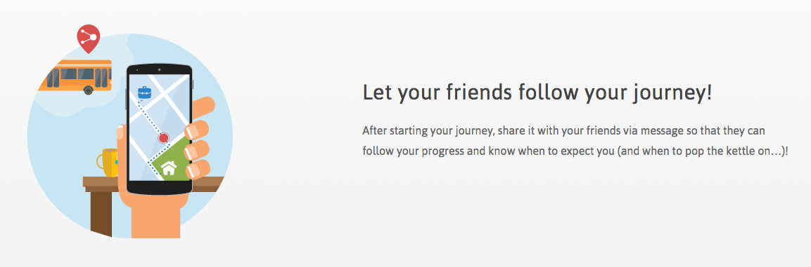

Jan ist spätabends auf dem Nachhauseweg von einem Konzert. Die S-Bahn ist ihm gerade vor der Nase weg gefahren und
der Bus scheint nicht zu kommen - oder hat der nur Verspätung? Jan schaut auf seinem Smartphone nach. Der Bus
scheint pünktlich gewesen zu sein, also ist auch der weg. Was nun? Wann kommt der nächste Bus, die nächste Bahn -
oder muss in diesem Fall ein anderer Dienst her, weil die Wartezeit zu lang wäre? Mit der App “ally” kann Jan
verschiedene Angebote vergleichen, inklusive Zeit und Kosten für die jeweilige Strecke:
- Öffentliche Verkehrsmittel (mit Live-Daten über Verspätungen),
- CarSharing Angebote,
- BikeSharing Angebote,
- Taxis (inklusive Uber),
- Fußwege.
Dazu nutzt ally offene Verkehrsdaten, wie beispielsweise Fahrplandaten und Linienpläne sowie Echtzeitdaten von
lokalen Verkehrsanbietern. Die kürzesten Routen aller zur Verfügung stehenden Verkehrsmittel können dann verglichen
werden. Twitterfeeds von offiziellen Verkehrsanbietern wie beispielsweise der Berliner BVG werden den Nutzern
ebenfalls angezeigt, was beispielsweise schnelle Hinweise auf aktuelle Verkehrsstörungen gibt. Die letzten 10
Suchanfragen werden automatisch gespeichert, sodass man diese auch dann ansehen kann, wenn man gerade nicht mit dem
Internet verbunden ist, beispielsweise bei Durchqueren eines Tunnels oder in der U-Bahn.

Jan entscheidet sich am Ende dafür, ein Rad zu nehmen. Der Standort befindet sich direkt um die Ecke und die frische
Nachluft könnte Kopfschmerzen am nächsten Morgen vorbeugen. Seinen Wohnort hat Jan bei seinen Favoriten
abgespeichert, sodass er für die Suche nur diesen anklicken muss, während sein aktueller Standort automatisch
übermittelt wird. Genauso können andere oft gesuchte Orte, wie beispielsweise der Arbeitsplatz, gespeichert
werden.
Nun hat Jan großen Hunger. Seine WG schaut daheim gerade eine Serie. Jan sagt Bescheid, dass er später gerne noch
eine Folge mitschauen würde, und fragt, ob sie ihm unterdessen eine Pizza machen könnten. Zu diesem Zweck schickt er
ihnen die Daten seiner gewählten Verkehrsroute. Um zu wissen, wann die Pizza in den Ofen muss, können seine
Mitbewohner so nämlich Jans Nachhauseweg über ally mitverfolgen und sehen, wo er gerade ist und wie lange er noch
braucht, ohne dass er vom Fahrrad aus Bescheid zu sagen bräuchte.
Doch nicht nur im Alltag benutzt Jan ally, um sich über Transportwege zu informieren. Besonders praktisch ist die
App, wenn er in einer fremden Stadt unterwegs ist. Ohne dass er lange nach dem Namen und der Seite des lokalen
Nahverkehrsanbieters suchen muss, kann Jan einfach bei ally die neue Stadt angeben und die App weiter wie zuvor
benutzen. Das funktioniert in 76 deutschen Städten, aber auch in Wien, Zürich, London, Lissabon, Santiago de Chile,
Dublin, Cork, Limerick, Sidney, Brisbane und Perth.
Weiter lesen